You can customize the XHTML that is generated at runtime by the XML Web DataWindow and the XHTML Web DataWindow using an XHTML export template in the DataWindow painter's Export Template view for XHTML.
 XML and XHTML Web DataWindow customization This section focuses on customizing the XHTML generated by
the XML Web DataWindow.
XML and XHTML Web DataWindow customization This section focuses on customizing the XHTML generated by
the XML Web DataWindow.
Each DataWindow object that you create has a default XHTML export template associated with it. You can see the default template in the DataWindow painter's Export Template view for XHTML.
 Displaying the XHTML export template The Export Template view for XHTML coexists with the Export
Template view for XML, each on its own tab page with XML on the
top by default. To display the view for XHTML, click the XHTML tab.
If you have any problems displaying the view, select View>Export/Import
Template>XHTML from the menu bar or select View>Layouts>Default
and then click the XHTML tab.
Displaying the XHTML export template The Export Template view for XHTML coexists with the Export
Template view for XML, each on its own tab page with XML on the
top by default. To display the view for XHTML, click the XHTML tab.
If you have any problems displaying the view, select View>Export/Import
Template>XHTML from the menu bar or select View>Layouts>Default
and then click the XHTML tab.
The XHTML export template is a single-instance document of the <form> element. It stores only the structural layout and any changes that you make to the elements, attributes, and style declarations. When XHTML or XSLT is generated, these changes are incorporated into the <form> element and the CSS stylesheet used to render the DataWindow in the browser. More than one export template can be created for a DataWindow.
Default style rules and most default attributes are not stored in the template. Any changes to style declarations are stored in the template, but at runtime they are removed and applied to the separately generated CSS stylesheet.
In the Export Template view for XHTML, you can reference DataWindow column, computed field, and text controls, and DataWindow expressions for each row in the XHTML, wherever character data is allowed. At runtime, these are replaced with text.
The XML Web DataWindow generates DataWindow content, layout, and style separately at runtime and renders in the browser a fully-functional DataWindow in XHTML.
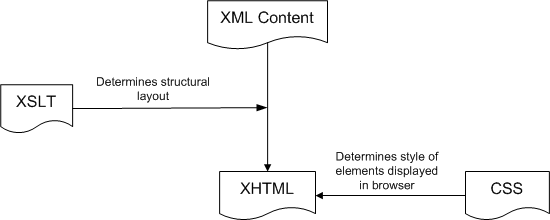
At design time, you can customize each of these XML Web DataWindow components:
Your customizations can include these types of modifications:
In the default XHTML export template, export XHTML entities (markup and character data) are displayed as single tree view items that denote the type of entity. The default template has one element for each column in the DataWindow object:
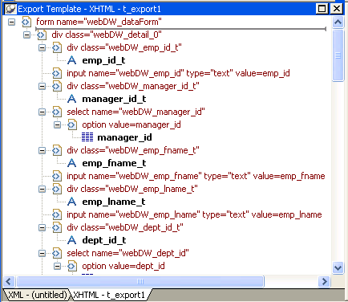
You can create multiple templates and save them by name with the DataWindow object. Each template is uniquely associated with the DataWindow object open in the painter. For information, see "Managing templates".
Each item in the XHTML export template displays as a single tree view item with an image and font color that denotes its type. Elements are represented by a yellow icon that resembles a luggage tag. The end tags of elements and the markup delimiters (angle brackets) used in an XHTML document do not display.
The following table shows the icons used in the Export Template view for XHTML.
From the pop-up menu for the default XHTML export template (with no items selected), you can create multiple templates and save them by name with the DataWindow object open in the painter. You can also open and edit existing templates that are associated with the current DataWindow object and, when more than one template is associated with the DataWindow, delete the current template:
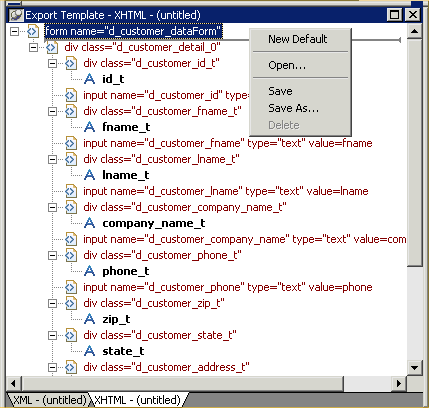
The pop-up menu has these options for managing templates:
To create a new default XHTML export template, select New Default from the pop-up menu in the Export Template view for XHTML.
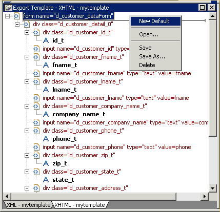
A new default XHTML export template has the following elements:
To save a new default template, select Save from the pop-up menu in the Export Template view for XHTML, name the template, and provide a comment that identifies its use.
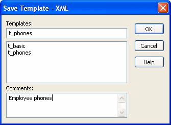
The template is stored inside the DataWindow object in the PBL. After saving a template with a DataWindow object, you can see its definition in the Source editor for the DataWindow object. For example, this is part of the source for a DataWindow that has two templates. The templates have required elements only:
export.xhtml(usetemplate = "t_phone"
template = (name = "t_address"
comment = "Employee Address Book" xhtml = "<...>")
template = (name = "t_phone"
comment = "Employee Phone Book" xhtml = "<...>") )
 Defining multiple templates You can define multiple templates for a single DataWindow
object. One reason you might do this is to vary the edit styles
generated for the same DataWindow edit control.
Defining multiple templates You can define multiple templates for a single DataWindow
object. One reason you might do this is to vary the edit styles
generated for the same DataWindow edit control.
The Data Export page in the Properties view lets you set properties for exporting data in XHTML. The names of all templates that you create and save for the current DataWindow object display in the Use Template drop-down list.
In addition to the properties that you can set on this page, you can use the Export.XHTML.TemplateCount and Export.XHTML.Template[ ].Name properties to let the user of an application select an export template at runtime. See "Selecting XHTML export templates at runtime".
You can specify the template you want to apply to the default XML Web DataWindow or XHTML Web DataWindow generation at runtime by setting the Export.XHTML.UseTemplate property. You set the property using the Data Export tab in the DataWindow painter's Properties view by selecting XHTML as the format and then selecting the XHTML export template's name from the Use Template drop-down list box.
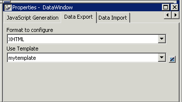
You can also set the Export.XHTML.UseTemplate DataWindow property in script. For information, see "Selecting XHTML export templates at runtime" on page .
 Incorrect setting of the UseTemplate property If you set the Export.XHTML.UseTemplate property at runtime
to the name of a template that does not exist, the built-in default
Template is used on an export.
Incorrect setting of the UseTemplate property If you set the Export.XHTML.UseTemplate property at runtime
to the name of a template that does not exist, the built-in default
Template is used on an export.
Table 6-11 shows properties related to XHTML export templates.
For detailed information about DataWindow properties, see the DataWindow Reference .
An XHTML export template has a Header section and a Detail section separated graphically by a line across the tree view. Other DataWindow bands are incorporated into these sections.
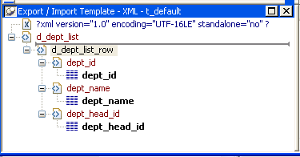
A line across the Export/Import Template view separates the Header section from the Detail section. The first element after this line, d_dept_list_row in the previous screen shot, is called the Detail Start element.
There can be only one Detail Start element, and it must be inside the document's root element. Each band of the DataWindow is wrapped by a <div> element. When the DataWindow is exported in XHTML, this element and all children and/or siblings after it are generated iteratively for each row.
The Header section can contain the items listed in Table 6-12. Only the root XHTML <form> element is required:
| Item | Details |
|---|---|
| Root <form> element (start tag) | The XHTML <form> element is the root element of the XHTML template. See "Root element". |
| XHTML elements | Additional elements below the root element. |
| DataWindow control references | Text. See "DataWindow controls". |
| DataWindow expressions | Text. See "DataWindow expressions". |
| Literal text | Text that does not correspond to a DW control. |
| Attributes | Can be assigned to all elements. See "Element attributes". |
| CDATA sections | See "CDATA sections". |
| Child elements | Child elements in the Header section cannot be iterative except for the Group DataWindow. |
 Detail section in root element The root element displays in the Header section, but the entire
content of the Detail section is contained in the root element.
Detail section in root element The root element displays in the Header section, but the entire
content of the Detail section is contained in the root element.
The items in the Header section are generated only once at runtime (when the DataWindow is exported to XHTML), unless the DataWindow is a Group DataWindow. For Group DataWindows, the corresponding XHTML fragment in the Header section is repeated so that it iteratively heads each group detail—the group of XHTML rows corresponding to the group specified in the DataWindow.
The Header section contains the rendering of the DataWindow header band and any group header bands. Bands are generated within <div> elements. The controls rendered in the Header section (such as computed titles and text control column headings) are typically also generated within <div> elements, with referenced content.
These entities are generated only once and are not iterated for each row. However, for DataWindows with group headers, the corresponding XHTML fragment in the Header section is repeated, iteratively heading each group of XHTML rows corresponding to the group specified in the DataWindow.
The Detail section contains the rendering of the DataWindow Detail band, delimited by the first <div> element. The <div> element's contents represent a single row instance to be generated iteratively. Any group trailers, summary band, and footer band are also appended and enclosed by <div> elements. The controls rendered in the Detail section (for example, column, computed field, DropDownDataWindow, DropDownListBox, checkbox, and button controls) are usually also generated within <div>, <input>, or <select> elements with referenced content.
The Detail section can contain the items listed in Table 6-13.
| Item | Details |
|---|---|
| First <div> element | The contents of the <div> element represent a single row instance to be generated iteratively. |
| XHTML elements | Additional elements below the root element. |
| DataWindow control references | Text. See "DataWindow controls". |
| DataWindow expressions | Text. See "DataWindow expressions". |
| Literal text | Text that does not correspond to a DW control. |
| Attributes | Can be assigned to all elements. See "Element attributes". |
| CDATA sections | See "CDATA sections". |
| Child elements | Child elements in the Header section cannot be iterative except in the case of group DataWindows. |
Every item in the Export Template view for XHTML has a pop-up menu for modifying the structural layout of the XHTML document that will be generated at runtime. Using the pop-up menu, you can perform actions appropriate to that item, such as editing or deleting the item, adding or editing attributes, adding child elements or other items, and inserting elements, CDATA sections, and so forth, before the current item.

If an element has no attributes, you can edit its tag in the Export Template view for XHTML by selecting it and left-clicking the tag or pressing F2. Literal text nodes can be edited in the same way. You can delete items (and their children) by pressing the Delete key.
The root element of the XHTML export template is the XHTML <form> element. You can change the name of the root element and add attributes and children.
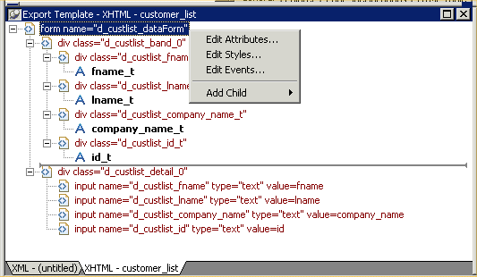
Changing the name of the root element changes the name of its start and end tags. You can change the name using the Edit Attributes menu item to display the Element Attributes dialog box. For information about editing attributes, see "Element attributes".
You can add the following kinds of children to the root element:
Adding a DataWindow control reference opens a dialog box containing a list of the columns, computed fields, report controls, and text controls in the document.
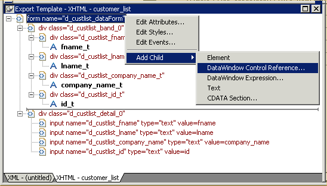
Control references can also be added to empty attribute values or element contents using drag and drop from the Control List view. Column references can also be added using drag-and-drop from the Column Specifications view.
 Drag-and-drop cannot replace You cannot drag-and-drop an item on top of another item to
replace it. For example, if you want to replace one control reference
with another control reference, or with a DataWindow expression, you first
need to delete the control reference you want to replace.
Drag-and-drop cannot replace You cannot drag-and-drop an item on top of another item to
replace it. For example, if you want to replace one control reference
with another control reference, or with a DataWindow expression, you first
need to delete the control reference you want to replace.
Adding a DataWindow expression using the Add Child>DataWindow Control Reference menu item opens the Modify Expression dialog box. This enables you to create references to columns from the data source of the DataWindow object. It also enables the calling of global functions. One use of this feature is to return a fragment of XHTML to embed, providing another level of dynamic XHTML generation.
If you use a control reference or a DataWindow expression that does not include a string to represent Date and DateTime columns in a template, the XHTML output conforms to ISO 8601 date and time formats. For example, consider a date that displays as 12/27/2002 in the DataWindow, using the display format mm/dd/yyyy. If the export template does not use an expression that includes a string, the date is exported to XHTML as 2002-12-27.
However, if the export template uses an expression that combines a column with a Date or DateTime datatype with a string, the entire expression is exported as a string and the regional settings in the Windows registry are used to format the date and time.
Using the previous example, if the short date format in the registry is mm/dd/yy, and the DataWindow expression is: "Start Date is " + start_date, the XHTML output is Start Date is 12/27/02.
Select Edit Attributes from the pop-up menu for elements to edit an existing attribute or add a new one. The attributes that display include all the default attributes for the elements with any template changes applied. The name attribute (and in some cases the class attribute) used to identify the element is omitted and cannot be changed.

You can change or delete the default attribute values or add new ones. Controls or expressions can also be referenced for element attribute values.
For each attribute specified, you can select a control reference from the drop-down list or enter a literal text value. A literal text value takes precedence over a control reference. You can also use the expression button to the right of the Text box to enter an expression.
The expression button and entry operates similarly to DataWindow object properties in the Properties view. The button shows a green equals sign if an expression has been entered, and a red not-equals sign if not. A control reference or text value specified in addition to the expression is treated as a default value. In the template, this combination is stored with the control reference or text value, followed by a tab, preceding the expression. For example:
attribute_name=~"text_val~~tdw_expression~"
When you finish modifying element attributes and you click OK, only changes are stored in the template. Default attributes that are deleted are added in the template and marked with an empty value.
If you right-click an element and select Edit Styles from the pop-up menu, the Style Declarations dialog box displays the read-only set of default style declarations for the element on the left:
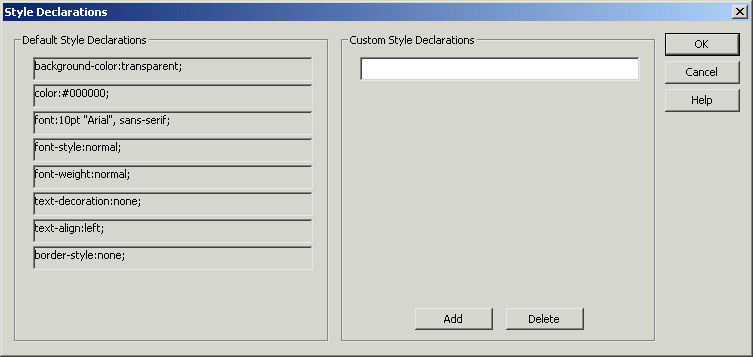
For clarity, style declarations are omitted from the XHTML export template. You can add new style declarations or override the existing ones by declaring them on the right side, or remove them by adding them with an empty value.
If you right-click an element and select Edit Events from the pop-up menu, the JavaScript Event Handlers dialog box displays a read-only set of event handlers for the element on the left:
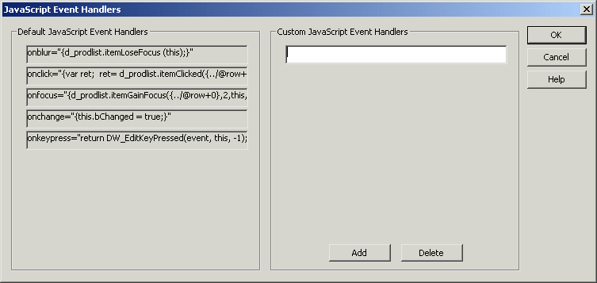
This dialog displays the current JavaScript event handlers, if any. You can add new event handlers or override the existing ones by declaring them on the right side, or remove them by adding them with an empty value.
Everything inside a CDATA section is ignored by the parser. If text contains characters such as less than or greater than signs (< or >) or ampersands (&) that are significant to the parser, it should be defined as a CDATA section. A CDATA section starts with <![CDATA[ and ends with ]]>. CDATA sections cannot be nested, and there can be no white space characters inside the ]]> delimiter—for example, you cannot put a space between the two square brackets.
<![CDATA[
do not parse me
]]>
The tree view in the Export Template view for XHTML represents a real-time DOM tree. Each XHTML element of the tree in the Header and Detail sections has a pop-up menu. The pop-up menu items perform DOM-based actions for modifying the structural layout of the XHTML document that will be generated. The menu options include:
| Menu item | DOM-based action |
|---|---|
| Edit | DOMNode::SetNodeName |
| Add Child | DOMNode::AppendChild |
| Insert Before | DOMNode::InsertBefore |
| Delete | DOMNode::RemoveChild |
Edit allows changing the label of the tree view item representing the XHTML element name. All element items that display no attributes, as well as literal text nodes selected in the tree view, can also be edited with a single mouse-click or with the shortcut key F2. Add Child allows appending an entity as a last child. The submenu option DataWindow Control Reference invokes a dialog containing a filtered list box of Column, Computed Field, and Text controls for user selection. Control references can also be added to empty attribute values or element contents using drag-and-drop from the existing Control List View. DataWindow Expressions can also be added using the existing dialog. DataWindow column references (in the form of expressions) can also be added using drag-and-drop from the Column Specification View. Tree view items, except the <form> element, can also be deleted with the Delete key.
The remaining context menu items invoke dialogs that allow overriding presentational and functional specifications of each element. These include:
The dialogs first display these specifications as they would be generated at runtime by default. The painter gets these from the XML Web Generator in DWE in real-time, read-only display on one half of the dialog. Within input field(s) on the other half of the dialog, the developer can override these specifications at the atomic declaration or attribute level. This includes resetting included declarations/attributes, setting declarations/attributes not included, or removing declarations/attributes. These change specifications will then persist in the XHTML export template, and be applied to the default presentation generated by the XML Web Generator at runtime.
Two DataWindow properties, Export.XHTML.TemplateCount and Export.XHTML.Template[ ].Name, enable you to provide a list of templates from which the user of the application can select at runtime.
The TemplateCount property gets the number of templates associated with a DataWindow object. You can use this number as the upper limit in a FOR loop that populates a drop-down list with the template names. The FOR loop uses the Template[ ].Name property.
string ls_template_count, ls_template_name
long i
ls_template_count=dw_1.Describe
("DataWindow.Export.XHTML.TemplateCount")
for i=1 to Long(ls_template_count)
ls_template_name=
dw_1.Object.DataWindow.Export.XHTML.Template[i].Name
ddlb_1.AddItem(ls_template_name)
next
Before generating the XHTML, set the export template using the text in the drop-down list box:
dw_1.Object.DataWindow.Export.XHTML.UseTemplate=
ddlb_1.text
You can export the DataWindow Web form or DataStore object in XML and XSLT using PowerScript dot notation or the Describe method:
ls_xmlstring = dw_1.Object.DataWindow.Data.XMLWeb
ls_xmlstring = dw_1.Describe("DataWindow.Data.XMLWeb")
When you export the DataWindow Web form or DataStore object, PowerBuilder uses an export template to specify the content of the generated XSLT and CSS style sheets.
 Default export format If you have not created or assigned an export template, PowerBuilder
uses the default XSLT export format. This is the same format used
when you create a new default export template. See "Creating and saving templates".
Default export format If you have not created or assigned an export template, PowerBuilder
uses the default XSLT export format. This is the same format used
when you create a new default export template. See "Creating and saving templates".
You can export the DataWindow Web form or DataStore object in XHTML using PowerScript dot notation or the Describe method:
ls_xmlstring = dw_1.Object.DataWindow.Data.XHTML
ls_xmlstring = dw_1.Describe("DataWindow.Data.XHTML")
When you export the DataWindow Web form or DataStore object, PowerBuilder uses an export template to specify the content of the generated XHTML and CSS style sheet.
 Default export format If you have not created or assigned an export template, PowerBuilder
uses the default XHTML export format. This is the same format used
when you create a new default export template. See "Creating and saving templates" on
Default export format If you have not created or assigned an export template, PowerBuilder
uses the default XHTML export format. This is the same format used
when you create a new default export template. See "Creating and saving templates" on
page .